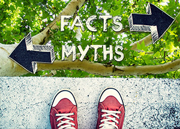

When it comes to tree services, there are many myths homeowners hear. We’re setting the record straight about some of the most common misconceptions surrounding tree care. Here at Ben Bivins Tree Experts, your trusted Atlantic County tree company, we believe in providing top-notch tree care. We also aim to empower our clients with the knowledge to make the best decisions for their landscapes. From the myths of self-healing trees to misconceptions about the best times for pruning, we’re here to debunk the myths and shed light on the truths that will help keep your trees healthy and your property safe. Get ready to explore these myths and learn more with our expert insights and information you need for maintaining a vibrant yard.

Myth #1: Trees Can Heal Themselves
One widespread myth that often leads to misconceptions about tree care is the belief that trees heal themselves. Unlike humans and animals, trees don’t regenerate tissue to heal wounds. Instead, they compartmentalize wounds. In other words, they create barriers to restrict the spread of decay and infection. Many misunderstand this natural process as healing. However, if a tree is improperly pruned or damaged, the affected area can become a hotspot for disease and infestation, compromising the tree’s overall health and stability. We know the importance of proper pruning techniques and timely care to support your trees’ natural defense mechanisms. Our tree experts ensure your trees continue to thrive and beautify your landscape.
Myth #2: Winter is the Best and Only Time to Prune Trees
Another common myth in tree care is that winter is the only time to prune. While winter pruning is beneficial for many tree species due to their dormant state, it’s not the only time pruning can be done. Although pruning in winter does minimizes stress and allows for easier identification of dead or diseased branches, it is not the only time this tree service can be done. In fact, it is better for some trees to prune them in late spring or summer when they are in full leaf and heal more rapidly. This is particularly true for those that are prone to sap loss or certain diseases. As an Atlantic County tree company, we understand the specific needs of each tree species in the area. We provide tailored pruning services throughout the year to ensure the health and longevity of your trees. By debunking this myth, we help our clients maintain robust and aesthetically pleasing trees across all seasons.
Myth #3: More Water and More Fertilizer Means Healthier Trees
A prevalent yet misguided belief among many tree owners is that more water and more fertilizer are always beneficial for their trees. This overzealous approach can actually be detrimental. Overwatering can lead to waterlogged soil, depriving tree roots of necessary oxygen. It also makes them susceptible to rot and other diseases. Similarly, excessive fertilization can harm trees by causing salt buildup in the soil. This burns the roots and disrupts the natural nutrient uptake process. Our tree professionals emphasize balanced, species-specific care routines that meet the actual needs of your trees rather than adhering to the ‘more is better’ myth.
Myth #4: All Trees are Beneficial
It’s a common misconception that all trees are inherently beneficial for your property. While trees generally add beauty and value, not all species are suitable for every landscape. Some trees can be invasive, grow aggressively, or require conditions that don’t match the local climate and soil in Atlantic County, NJ. Others may have extensive root systems that can damage foundations, sidewalks, and underground utilities. Our knowledgeable experts can help you choose the right trees for your environment. We’ll consider factors like growth habits, maintenance needs, and
compatibility with local flora and fauna. By dispelling the myth that all trees are good for your property, we aim to ensure that the trees you plant enhance your landscape without causing future issues.
If you are in need of any tree services in Atlantic County, contact us today! As an Atlantic County tree company, we offer free quotes for your job and provided licensed and insured work.